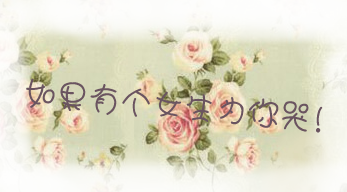

假如你的生命里有这样一个女孩

假如你的生命里有这样一个女孩，她既不漂亮，也不温柔，但她很可爱，和她在一起的日子你很快乐。
很遗憾她不是你喜欢的那种女孩，她始终无法带给你那种心跳的感觉。在你的生命里，她只是充当了一个过客的角色。来则来，走也不会给你留下任何感情的纠葛。
女孩有时很调皮，约好一起骑车去郊游，见了面却发现原来她是要你带着她走。说好一起去看电影，可到了电影院门口，她却说忘了带票，然后让你陪她流浪街头到午夜，她会在约你不成时，偷偷将一枚发卡放在你的衣兜里，第二天再打电话让你把发卡给她送去．．．．．．．
女孩有时也很乖,她会静静的听你说话,望着你的眼睛发呆,如凝视一尊唯美的雕像.有时你也会告诉她:“其实你也挺可爱。”
“是么?”女孩笑道，然后一脸的遗憾：“可爱有什么用，我爱的人又不爱我”。“你爱上谁了？”你一脸的疑惑。女孩笑而不答。
你曾认为你们的友谊如钢铁长城般不可摧，你也为有这样一位红粉知己而暗自庆幸。她对你关怀备至，而你也视她为你的哥们儿，她的事你也总是义不容辞。
女孩有时也很烦，她总是不厌其烦的给你打电话，让你陪她去这去那，而不管你的心情有多坏。她总是让你陪她吃这吃那，全然不顾你的胃口有多糟。
她也总能让你吃下许多奇怪的食品，让你充当她的实验品，替她尝那些看似美味，但却不知味道如何的街边的小吃。
不过女孩其实也很好，每次旅行回来总不忘给你带回一些小礼物，或是一串佛珠，或是一只海螺，都是美丽精巧，虽然他们在你的手里总是会不知去向。
她也会在你生病的时候把几盒上好的药用洁白的手绢包好放在你的桌子上，并不忘准时给你打电话，提醒你吃药。
时间一天过去，女孩的关怀也越来越无微不至，似乎有点超出了作为朋友的的界限。渐渐地你开始担心，担心一些不该发生事会发生……
有一天,女孩问你:“如果有一天我离开了你,你会伤心么?”你坚决地回答到:“不会!”
“为什么？”
“因为你不是我的女朋友。”
“那我做你的女朋友吧？”
你一脸真诚的回答道：“我想我们还是作朋友比较好，如果你选择离开，我会为你祝福。”
女孩依然快乐如以往，只是眼里似乎多了一丝忧郁。女孩给你打电话的次数少了，，你们见面的次数与她打电话的个数成正比。因为她永远不可能成为你生活的主旋律，所以你从不给她打电话。即使很长时间不见面，你也没有觉得有什么不对。你已经习惯了她的主动。
那年的圣诞节，女孩送你一条白色的围巾，她告诉你这是她织成的第一件成品，费了很多的功夫的。你不肯收，女孩说：”“收下吧，这里的冬天很冷的 。
“情人节的那天，女孩送你一条皮带，你又不肯收，女孩说：”“别以为我要拴住你，我不会自作多情的，只是见你成天用朋友的皮带怕人家心里不愿意，嘴上又不好意思说，才给你买了一条送给你，你可千万别多心。”
以后的日子，女孩越来越多地凝望你的眼。每次分手的时候都会恋恋不舍，好像每次分手都是永诀，走时还不忘问你：“不想对我说点什么吗？”
“天黑了，路上小心点。”你一脸的关切。
“谢谢！”女孩微笑道，声音里有一点苦涩。望着她消失在夜幕中的背影，你自言自语：“你真傻。”
她在你的生命里已经存在了很久，当她渐渐远离你的时候，你也没有在乎过，因为你不爱她，你们只是朋友，也只是朋友。
直到有一天她约你再次相见，说有点事想告诉你。见了面她一改往日的喋喋不休，望着你不说话，然后，你们就一前一后走在并不是很明亮的马路上，走了很远。
“以前我们在一起的日子很快乐不是么？”
“是的，很快乐。”
“那你有没有烦过我？”
“说实话，有过。”
“难道你没有觉得我对你的感情超过了作为朋友的界限？”
“没有呀，我觉得我们是模范好朋友。”
“你撒谎。”女孩停了下来，等你。你晃了半天才走到她的身边。
“唉，我担心的事终于要发生了，她的自制力怎么这么差，我们本可以是很好的朋友。有一个异性知己多不容易呀。看来我们的友谊就要到此为止了。”此时，你的心情复杂。
勿抄袭-->
女孩忽然转过身来，望着你。片刻，说道：“我爱你。”
“哦，我们现在不是模范好朋友了。”你声音低沉地说。
“我爱你。”女孩倔强的有说了一遍。
“那又能怎样呢？”你抬起耷拉了半天的眼皮，直视女孩火辣辣的目光。
女孩扭过头去，半天没有说一句话。
“你爱我么？”女孩开始继续向前。
“不爱。”这种拒绝你早已是熟路。
“你以后会爱我么？” “不会。” “为什么？” “我们相处的日子不短了，我要是爱你的话，早就爱了，不会等到现在。”你苦口婆心地说道。
“如果你爱我，你会告诉我么？”
“当然会，如果我在早就爱上了你 ，不到中午‘我爱你’这三个字我就会对你说不下100次了。
“女孩停下了脚步，你也停在了离她不远的一个花池边，拿出了一只烟，点着……女孩一直没有说话,也没有继续向前走.你知道她在哭.
渐渐地她哭的声音越来越大,她一边哭,一边说:“我就知道会这样，我早知道。”
她泣不成声地告诉你，她曾是多么的爱你，而又不敢告诉你，她不奢望得到你的爱，她只是想告诉你，她爱你爱了很久很久，和
你在一起的认日子快乐也痛苦。
每次望着你的时候，就会觉得你近在咫尺而又远在天涯，爱你爱了那么久，却一点也不了解你。
你总是对关于自己的事绝口不提，让她觉得你的心离她很远很远，够也够不着。虽然你就在她的身边。
她说她爱你爱得好辛苦，所以你们在一起的快乐日子都成了她痛苦的根源，无时不思，无刻不想，连梦里也不得安生，她的脑海里装满了你的影子，挥手不去。想你的时候，两只手疯狂拍打自己的头，却无法摆脱对你思念的苦。
她哭了很久很久，哭得很痛很痛，说的每一句话都是夹杂着她的抽泣。那是一种感情的宣泄，那止不住的泪水就像对你的爱如滔滔江水般破堤而出。每一滴泪都是爱的宣言。
“为什么要对你掉眼泪，你难道不明白是为了爱……”

转给0-4人：你的生活会悄悄起变化
转给5-9人：生活如你所愿
转给9-14人：接下来的三个星期你会有惊喜的发现
转给15人以上：你的梦想终会成真!